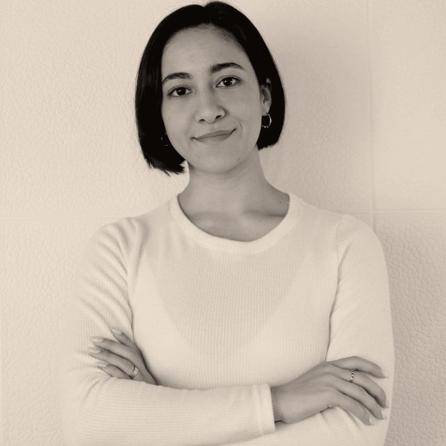
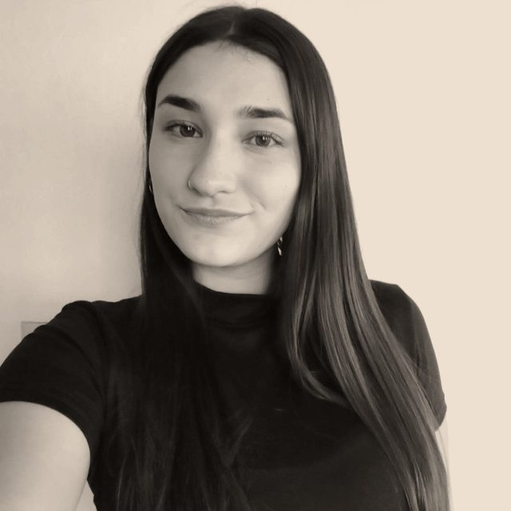

Calibrate demand
before you
scale spend.
We turn scattered paid media, funnels and analytics into one clean acquisition signal. 10 years, 300+ funnels shipped across the US, Europe and LatAm.
Request a growth audit→margin closed from just $2,744 in ad spend — one webinar funnel, still live (final: $1M+)
lower cost per qualified lead — from $50 down to $5 (final: 10×)
ROAS after scaling UGC + AI creative — up from 2× (final: 7×)
leads generated at $4.5 avg. cost — single social funnel, $335K spend (final: 63K)
Ethan Allen · Dirt King · Giant Partners · Nationwide Trailers
Understand the system.
Deep discovery on the business model, audience and funnel assets — we map the system before touching a dollar.
Creative at volume.
Strategy first, then creative volume — ads varied up to 12× more often than standard, always on-brand.
Ship the funnel.
Meticulous measurement plan, then fast implementation. Speed is part of the strategy.
Measure everything.
Business results, not vanity metrics. Everything measurable gets measured — and improved.
The signal compounds.
Winners get budget, losers get killed. The signal tells you exactly what to scale next.
$1M+ in margin from $2,744 in ad spend.
B2B and B2C lending funnel with on-demand webinars. 5 deals closed, campaign still live.
10× lower cost per lead.
Full funnel incl. the lead magnet. Ads varied up to 12× more often — cost per ICP lead cut from $50 to $5.
7× ROAS, up from 2×.
20× more UGC volume than the existing creative, for a US legal company.
63,000 leads at $4.5 average cost.
$335K/yr social campaign for a home-decor leader, full funnel built end to end.
3.7× revenue growth.
Google and Microsoft Ads over 18 months. ROI doubled with a TOFU/BOFU split.
5.3× organic traction.
SEO and GEO tooling for a Texas trailer-industry leader — 410,000+ organic visitors in 2024.
Amir Gómez
Growth Lead10 years in online marketing, 300+ successful B2B and B2C funnels — leading high-performance growth teams across multiple countries.

Maia Gaitán
Acquisition Lead5+ years running 360° digital campaigns. Meta, Google, GA4, SEO, web development, and more.

Pilar Lucero
Full-Funnel Data AnalysisAnalysis of the full process and its results. Constant improvement of active resources, research and growth tactics.
The best idea wins — 100% collaborative.
- Full-funnel paid media
- Creative & UGC (+AI)
- SEO + GEO
- Funnels, webinars & VSL
- Data & full-funnel analytics